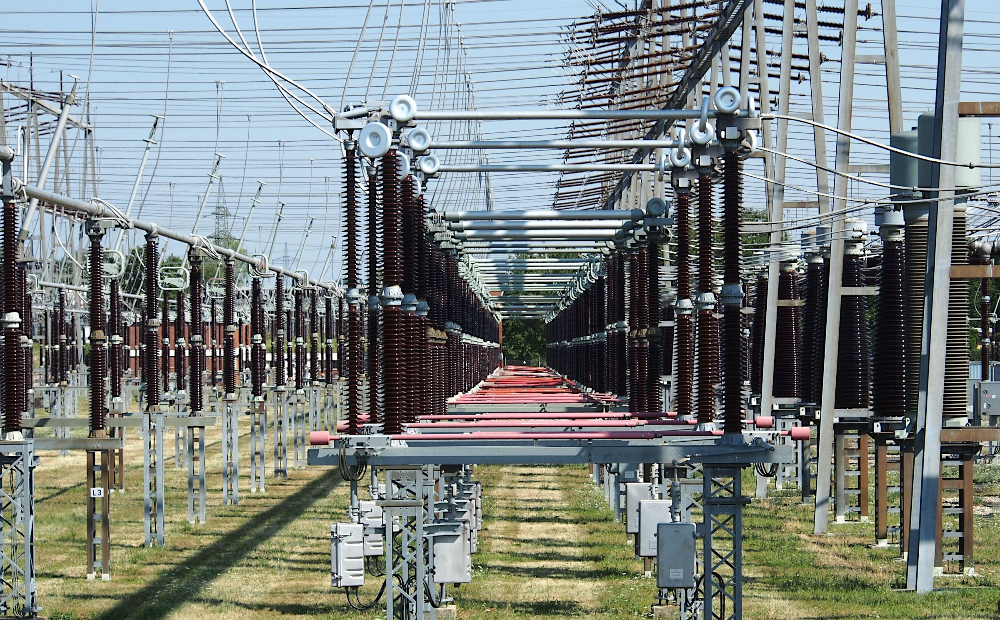
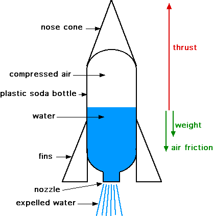
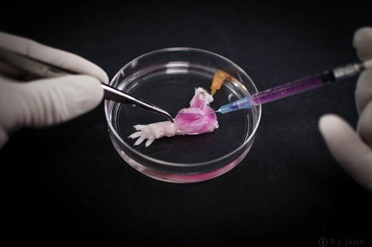
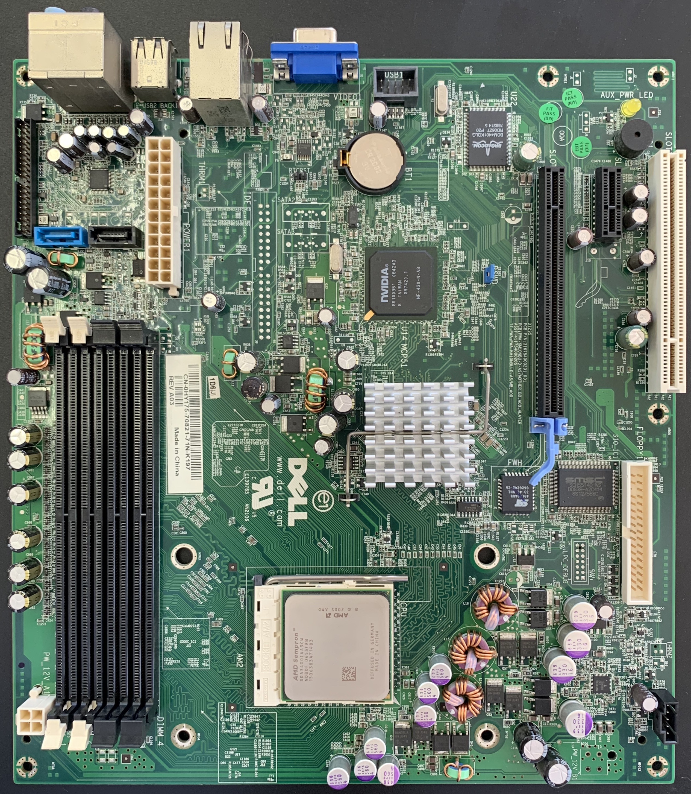
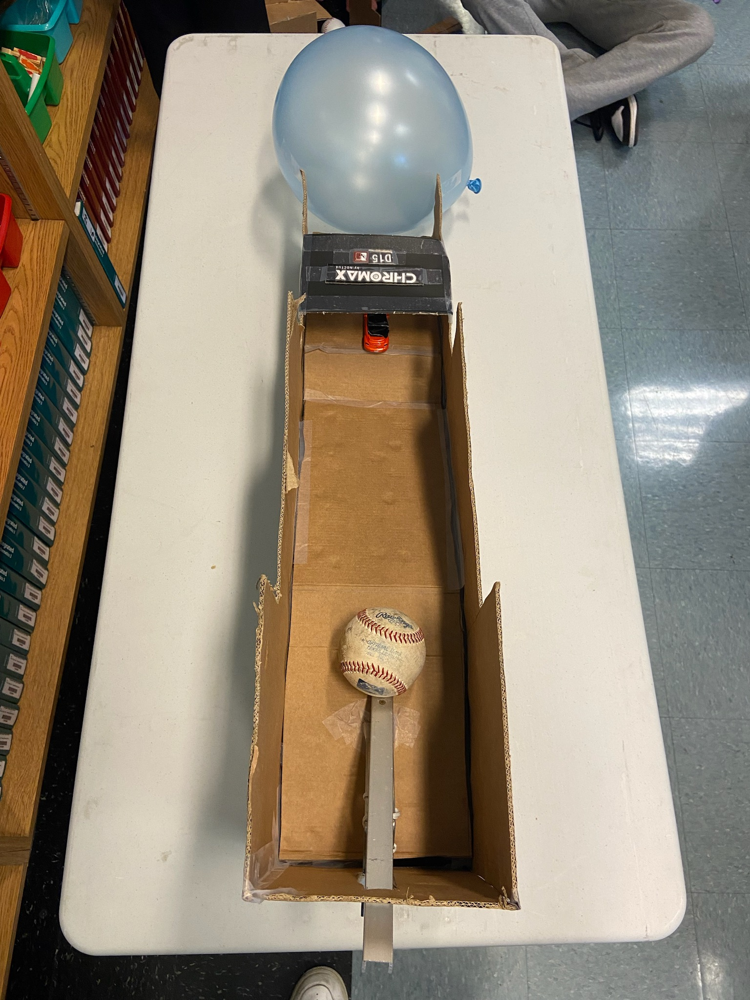
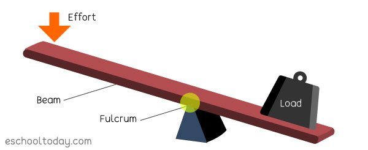
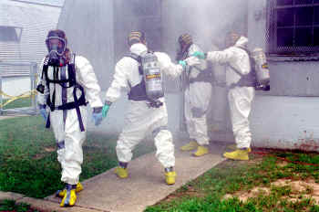
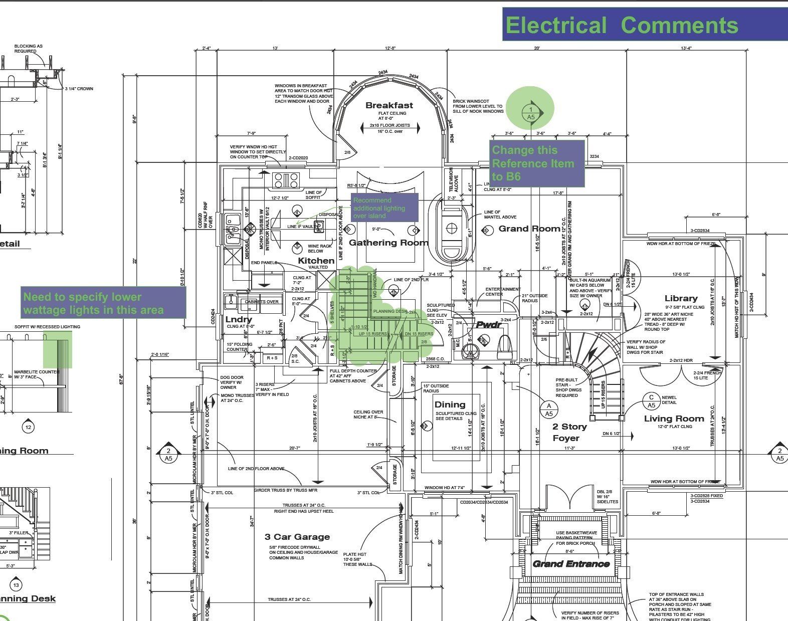

| Date |
Report |
Photo |
| Week Twelve: 11/10/2022 |
Now we are going from theory to relaity for our electical engineering unit. We where each given a breadboard
and some transisotrs and resistors. We were tasked with creating both seies and parellel circuts just like we had
done virtually last week. We measured the voltage, amperage, and resistance going through the circut and filled out
a worksheet with the number we would measure. Those who completed the task early where given the opourtunity to
walk around the classroom and teach the others how a circut was properly constructed.
|

|
| Week Eleven: 10/31/2022 |
The next three weeks will be dedicated to one of the biggest feilds in engeneering; electrical engineering.
During the begingin of the week we learned about electricity fundementals such as voltage, amperage,
resistance and power through a presentation that the teacher gave us. Later on we played around with and made
series and parellel ciruts virtually in tinkercad.
|

|
| Week Ten: 10/24/2022 |
In our tenth week, we are moving into the feild of environmental engineering. We learned how water is
proccessed and treated at a facility in order to prevent damage to the environement. We learned that water
filtration is a multi stage process involving varius types of filters, temperatures, pressures, and tecniques.
We then went on to build a water filter out of some given materals in order to filter some dirty water that
was provided by our teacher. Some designs worked better than other at filtering the dirty water due to the
order of the filtering materials that was put into the filter.
|

|
| Week Nine: 10/17/2022 |
Duing the week we worked together on a water bottle rocket group prodject. First we had do some reaserch and
think up a game plan and any design tweaks. Later on, we began the construction of the rocket, working as a
group to make the process go smoothly. At the end of the week, we lauched our rocket alongside the other
group's rokcets. Unfortunatly however, our rocket was not able to launch due to a presurization failure caused
by the lack of an airtite seal on the inside of the front cone. Regardless, we had fun and learned a lot in
the procces.
|

|
| Week Eight: 10/10/2022 |
This week we worked on two prodjects, one called the flying paper challenge, and another prodject about a
water bottle rocket competition. In the flying paper challange, we were tasked with creating a flying object
using a single sheet of paper and hit a trash can a distance away with it. It was fun and similar to our
second competition later on in the week. The water bottle rocket prodjects had us create a rocket from a
bottle that will go as far as possible. The general design is due by the end of the week and the competition
will take early next week.
|

|
| Week Seven: 10/3/2022 |
Now we will be moving into our next area of engineering; bioengineering. Another presentation was given on the
topic today going over prothetics. Inspiration for prostethics are usually inspired by nature and many aspects
of bioengineering are tied into the making of them. On Wednesday we were tasked with researching and creating
a 3D model of a prostethic for an aminal of our choise. I went with a beak prostheic for an Eagle and my peers
had intresing ideas as well.
|

|
| Week Six: 9/26/2022 |
This week we are tranisitoning away from mechanincal engineering, and into computer engineering. We listened
to multiple presentations on the topic and learned about the various parts of a computer and how they work
together. Later on in the week we took apart and rebuilt a laptop. While opening up the computer, we were
tasked to indentify the differnt components and fill out a worksheet with what we learned from the disection.
|

|
| Week Five: 9/19/2022 |
Our Rube Goldberd machine constuction is well on its way now, we have brought a custom lever from home due to
it being difficult to construct from cardboard and tape alone. Our design was rather simple yet consistant.
Failing on our first attemp, the machine later went on to preform as intended after a few simple tweaks to the
design. Every group had an opourtunity to test this week and many
|

|
| Week Four: 9/12/2022 |
This week we will begin custrustion on the Rube Goldberg Machine. Cutting up cardboard, taping down loose
peices, and building the basic frame took place this week. We will soon be able to see the design go from the
digital form into a phisical manifestation. Soon, hopefully, our design will be ready to test and tweak for
optimal results.
|

|
| Week Three: 8/29/2022 |
Today we are working on our 3D models of our Rube Goldberg Machine. Between our four group members, one design
was chosen today in order to progress into the construciton phase. Most build materials will be provided in
class however due to a shortage of supply, we have been advised to bring our own materials from home to be
safe.
|

|
| Week Two: 9/2/2022 |
This week we took a cursory overview about workplace saftey and the various personal protective equipent used.
After that we began brainstorming and sketching out our next prodject design; a Rube Goldberg Machine. A
minimum of three simple machines should be used in this prodjecct in order to receive full credit. For our
group prodject, we decided to go with a lever, an inclined plane, and a wheel and axel.
|

|
| Week One: 8/22/2022 |
This week was the first week in engineering class. We went over how to create and program a website that will
house all of our text updates and notes of what we learned. The website is to be update on a weekly basis and
uploading photographs of our work are recomended. Throughout the year, we will cover all of the various types
of engineeringing and share on the website what we learned form group activities and presentations.
|

|